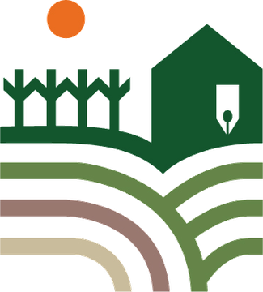

산업용대마연구회(산마연)는 산업용 헴프를 농업에서 산업으로 연결하기 위해 재배, 소재, 지역, 환경 네 분야를 연구하는 전북 지역 연구회입니다.
새만금 염류 토양 실증조사, 「쨈매로 다다잇선 혁신 프로젝트」 참여, 전북특별자치도의회 산업용 헴프 정책 간담회 참여 등 현장과 정책을 잇는 활동을 하고 있습니다.
연구회 소개, 연구·프로젝트, 활동, 연구성과, 아카이브, 협력 문의를 hemprnd.org에서 확인할 수 있습니다.

불러오는 중입니다…
이 사이트를 보려면 JavaScript를 켜 주세요.